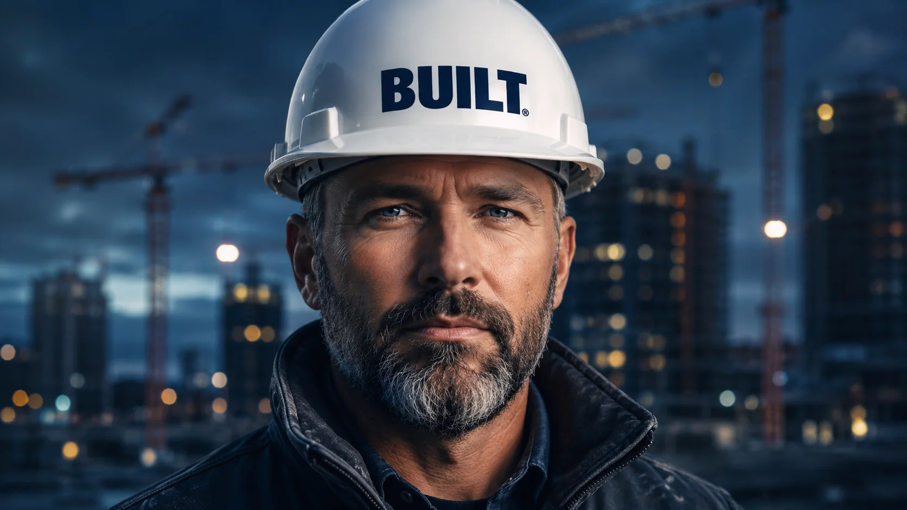
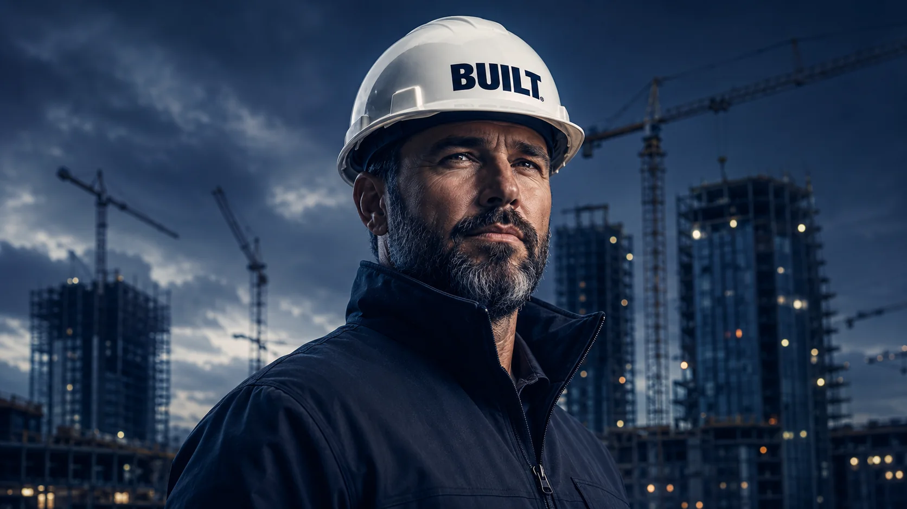

Um ativo, operação, contrato ou oportunidade imobiliária entra no radar da rede.
BUILT Alliance
Transforme competência em patrimônio real.
Um ecossistema de alianças patrimoniais imobiliárias onde capital, confiança, relacionamento e entrega se convertem em participação registrada e rastreável.
Ecossistema
O mercado sempre foi construído por quatro forças.
Capital para viabilizar. Confiança para aproximar. Relacionamento para abrir portas. Entrega para transformar intenção em realidade.
O novo tempo exige que essas forças deixem de atuar de forma dispersa. A BUILT organiza esse padrão para que oportunidade gere aliança, aliança gere participação e participação construa patrimônio.
Método BUILT
Da oportunidade à participação patrimonial.
O onboarding precisa ser simples: entender a oportunidade, registrar a entrega, validar a contribuição e acompanhar a participação.
Aliados compatíveis se conectam para estruturar capital, execução, fornecimento ou estratégia.
A contribuição real é registrada com evidências, responsabilidades e governança clara.
Valor validado pode se converter em participação proporcional, rastreável e reconhecida.
BIA
Base de Integração de Ativos: organiza o ativo, a operação ou a oportunidade patrimonial.
OPA
Oportunidade Patrimonial Ativa: nasce de uma necessidade concreta dentro de uma BIA.
CPP
Cota de Participação Patrimonial: registra a contribuição validada do aliado na aliança.
Aura
Reputação percebida pelos pares, construída por postura, entrega e comportamento profissional.
Fundamentos
Reputação vira aliança. Aliança vira patrimônio.
A lógica do ecossistema é simples: validar pessoas, formar alianças inteligentes e compartilhar valor gerado.
Promover estabilidade convertendo esforço em patrimônio.
Multiplicar prosperidade na vida de quem constrói.
Reputação → Alianças → Patrimônio
Relações que duram multiplicam oportunidades e patrimônio. O vínculo frágil perde espaço para interesse pontual.
Reputação se valida na prática. Cada ação, palavra e compromisso molda presença e confiança na comunidade.
As decisões sustentam o todo. Crescimento individual precisa considerar comunidade, cultura e patrimônio comum.
Por que agora
Gerações diferentes, a mesma busca por estabilidade.
A BUILT fala com legado, autonomia, reputação, tecnologia e pertencimento econômico em uma rede confiável.
Proteção, legado e formalização.
Experiência, relacionamento e conhecimento técnico podem virar participação protegida e rastreável.
Autonomia e multiplicação.
A entrega não precisa morrer no fee; pode ser registrada, validada e convertida em participação.
Entrada, reputação e oportunidade.
Comunidade, transparência e evidências tornam a reputação visível e abrem portas reais.
Tecnologia e propriedade distribuída.
Plataformas, IA e comunidades ajudam a aprender, contribuir, ser validado e construir participação desde cedo.
Ambientes BUILT
Três portas de entrada para construir valor.
Os ambientes organizam apresentação, investimento e execução para que cada perfil participe da cadeia.
BUILT Vitrine
Conecte-se. Apresente-se. Exponha projetos, ativos e ofertas com narrativa, imagens e dados de decisão.
Entrar na VitrineBUILT Capital
Invista. Acompanhe. Estruture oportunidades com indicadores, status e uma visão clara do portfólio.
Entrar em CapitalBUILT Alliances
Estruture. Execute. Una incorporadores, construtoras, fornecedores e parceiros em torno de entregas.
Entrar em AlliancesComo funciona
O ecossistema conecta oportunidade, capital e execução com rastreabilidade.
01
Profissionais apresentam oportunidades locais e formam células com membros validados.
02
Parceiros de capital avaliam projetos com curadoria, reputação e visibilidade de andamento.
03
Fornecedores entram em alianças recorrentes e convertem relacionamento comercial em patrimônio.
Situações reais
Para quem a BUILT gera valor?
O folder apresenta casos típicos da cadeia imobiliária em que alianças reduzem fricção e ampliam participação.
Profissional herda uma área e não sabe como aproveitar.
Conecta especialistas, forma uma célula local e transforma intenção em projeto com rastreabilidade.
Profissional tem oportunidade, mas não tem capital.
Apresenta a oportunidade, encontra parceiros compatíveis e cria viabilidade com patrimônio compartilhado.
Investidor quer entrar no retrofit no Brasil.
Acessa projetos validados, reputação local e acompanhamento para aportar com mais contexto.
Fornecedor quer escalar fornecimento via alianças.
Participa de projetos recorrentes, cria relacionamento estratégico e aumenta previsibilidade comercial.
Benefícios dos membros
Uma rede para validar, conectar e compartilhar valor.
Os benefícios combinam reputação validada, alianças inteligentes, alcance global e participação em projetos.
- Rede fechada com membros e oportunidades qualificados.
- Validação por pares para fortalecer reputação.
- Acesso a especialistas, fornecedores e parceiros validados.
- Alianças inteligentes com perfis e interesses compatíveis.
- Oportunidades locais e globais com leitura multilíngue.
- Investimentos diversificados em projetos rastreáveis.
- Participação direta ou liderança em obras.
- Retorno financeiro em oportunidades estruturadas.
- Esforço, capital e fornecimento convertidos em patrimônio.
- Crescimento coletivo e reconhecimento pelo valor entregue.
Galeria
Imagens que reforçam escala, confiança e obra em movimento.


Acesso
Não é sobre levantar paredes. É sobre levantar pessoas.
Acesse a plataforma para conhecer a vitrine, acompanhar capital, estruturar alianças e transformar projetos em negócios com mais foco.
Acessar o App